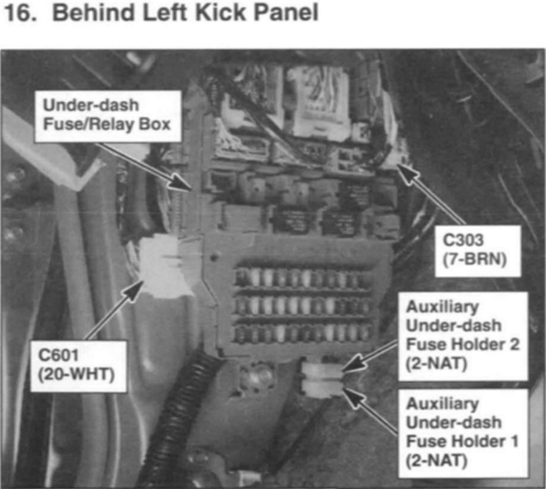

Yaw Rate Sensor: Locations
VSA (Vehicle Stability Assist) Component Location Index:
Fan Controls Component Location Index:
Starting System - Component Location Index:

Charging System Component Location Index:
Cruise Control Component Location Index:
PGM-FI System Component Location Index:
Electronic Throttle Control System Component Location Index:
Climate Control Component Location Index:

Relay And Control Unit Locations Engine Compartment:
Relay And Control Unit Locations Dashboard:
Relay And Control Unit Locations Dashboard:
Relay And Control Unit Locations Rear:
Exterior Lights Component Location Index:
Turn Signal/Hazard Flasher Component Location Index:
Interior Lights Component Location Index:
Power Windows Component Location Index:
Wipers/Washers Component Location Index:

Accessory Power Sockets Component Location Index:
Accessory Power Sockets Component Location Index:
Seat Heaters Component Location Index:
Rear Window Defogger Component Location Index:

TPMS (Tire Pressure Monitoring System) Component Location Index:
Active Damper System Component Location Index:
